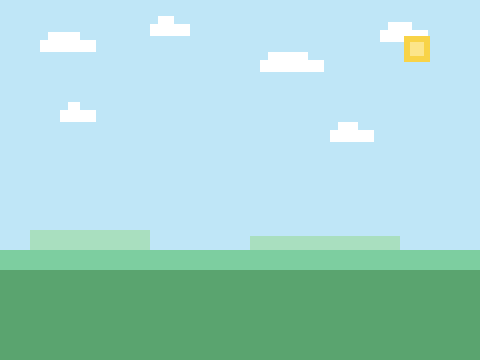

跳跳冒险
五次课做出一个马里奥式的平台跳跃游戏——先玩成品 → 拆解 → 自己试 → 卡住才看参考做法。上课请用 放映版；本页是全文与进度。
一、开课之前
先玩 1 分钟
👨👩👦 一起 · 先玩 1 分钟
先把成品玩一遍——你接下来五次课，就是要亲手做出它。
游戏解剖图
👨👩👦 一起 · 游戏解剖图（自上而下）
整个游戏 = 五大模块，五次课各做一块：
第 1 课
第 2 课
第 3 课
第 4 课
第 5 课
素材清单
👨👩👦 一起 · 素材
五个角色加一块背景：小勇者（站/跑造型）、蘑菇敌、问号砖（满/空造型）、金币、终点旗——素材包全有；地面和平台直接画在背景里。

背景自带 + 课上画平台课程进度表
👨👩👦 一起 · 课程进度表
二、五次课
第 1 课 · 走和跳
👨👩👦 一起 · 本章目标
👨👩👦 一起 · 效果与拆解
- 已有重力与速度— 小鸟课的看家本领
- 新学碰到颜色— 落回草地就站住
- 新学只在地面才能跳— 空中连按无效
- 新学跑动换造型— 站/跑1/跑2 动起来
👦 孩子自己 · 自己试试（先别翻答案）
先自己试 10 分钟：素材包里全有，先导入摆好；想怎么做就怎么做，改坏了绿旗能复原；卡住超过 5 分钟，再看下面的参考做法。
👨👩👦 一起 · 概念 · 碰到颜色
颜色也是一堵看不见的墙
- 「碰到颜色 ◻?」在侦测抽屉：点小方块 → 用吸管点舞台上的草地
- 落地 = 正在下降 且 碰到草地色，两缺一不可
- 颜色要挑"只属于地面"的色，别挑到处都有的天空蓝
👨👩👦 一起 · 参考做法（卡住才看）
- 小勇者登场，先会跑
当绿旗被点击 移到 x: (-180) y: (0) 重复执行 如果 <按下 [→] 键?> 那么 将x坐标增加 (3) 面向 (90) 度 如果 <按下 [←] 键?> 那么 将x坐标增加 (-3) 面向 (-90) 度🧰 积木在：运动侦测控制角色左下「旋转方式」选 左右翻转，转身才不倒立✅ ←→ 一按就跑，脸朝前进方向 - 重力 + 只在地面才能跳
如果 <<按下 [空格] 键?> 且 <(y速度) = (0)>> 那么 将 [y速度] 设为 (11) 将y坐标增加 (y速度) 将 [y速度] 增加 (-1)🧰 积木在：接在跑步积木后面同一个循环里；变量 y速度 这次选「适用于所有角色」（第 3 课蘑菇要用）✅ 空格起跳、越升越慢、开始下坠 - 碰到草地色，站住
如果 <<(y速度) < (0)> 且 <碰到颜色 [#5aa46f]?>> 那么 重复直到 <<碰到颜色 [#5aa46f]?> 不成立> 将y坐标增加 (1) 将 [y速度] 设为 (0)点积木里的颜色小方块 → 吸管 去舞台点草地绿（背景左下角那片深绿）✅ 落回草地稳稳站住，再按空格又能跳 - 跑起来要像跑：换造型
如果 <<按下 [→] 键?> 或 <按下 [←] 键?>> 那么 换成 [跑1] 造型 等待 (0.1) 秒 换成 [跑2] 造型 等待 (0.1) 秒 否则 换成 [站] 造型🧰 积木在：外观——造型在素材包里已配好✅ 跑起来迈腿，停下站好
👨👩👦 一起 · 验收
- 🏃 ←→ 跑动流畅、脸朝前进方向
- ⬆️ 空格起跳，空中再按没反应
- 🛑 落回草地站住不抖动
- ↩️ 绿旗回到起点满血复活
能跑能跳，小勇者活了——下一课给草原长出平台。
👨👩👦 一起 · 试一试
跳跃手感配方
🧑 家长先看 · 常见错误
跑跳三病
👦 孩子自己 · 进阶挑战 · 三选一
侦测
声音
运算
👦 孩子自己 · 课后回顾
第 2 课 · 站上平台
👨👩👦 一起 · 本章目标
👨👩👦 一起 · 效果与拆解
- 已有碰到颜色— 第 1 课刚学会
- 新学第二种地面色— 灰平台和草地一样站得住
- 新学撞头处理— 上升中顶到平台，速度归零
- 新学掉坑重生— y 太低就回起点
👦 孩子自己 · 自己试试（先别翻答案）
先自己试 10 分钟：先动手在背景上画 3 块平台（等会儿有画法），再让小勇者跳上去；卡住超过 5 分钟，再看参考做法。
👨👩👦 一起 · 参考做法（卡住才看）
- 把平台画进背景
舞台左下角「背景」标签 → 选中背景 → 切到「造型」页 → 用 矩形 工具画横条，填充色定成 #95a5a6、描边 #6c7a7d。画 3 块，从低到高像台阶（记住：一次最多跳 3 个身位高）✅ 背景上出现三块灰色台阶
- 两种颜色都站得住
如果 <<(y速度) < (0)> 且 <<碰到颜色 [#5aa46f]?> 或 <碰到颜色 [#95a5a6]?>>> 那么 重复直到 <<<<碰到颜色 [#5aa46f]?> 或 <碰到颜色 [#95a5a6]?>>> 不成立> 将y坐标增加 (1) 将 [y速度] 设为 (0)🧰 积木在：就在第 1 课落地判定那行上改——条件从 1 个色变 2 个色✅ 草地和平台随便落，全都站得住 - 撞头：上升中顶到平台
如果 <<(y速度) > (0)> 且 <碰到颜色 [#95a5a6]?>> 那么 将 [y速度] 设为 (0)顶到头速度归零，下一帧重力自然把他拉回来——"咚"一下的感觉就有了✅ 从下往上跳顶到平台，不再穿过去 - 掉出屏幕 = 回起点
如果 <(y 坐标) < (-170)> 那么 移到 x: (-180) y: (0) 将 [y速度] 设为 (0)🧰 积木在：加在主循环末尾；想扣命？下一课一起做✅ 掉下去不死循环，摔回起点重来
👨👩👦 一起 · 验收
- 🪜 三块平台一层一层跳得上
- 🧱 从下面顶到平台会停住
- 🕳️ 掉出屏幕回起点重来
- ↩️ 绿旗全部复原
地形有了——但草原太安静了，下一课放蘑菇出来。
👨👩👦 一起 · 试一试
地形设计课
🧑 家长先看 · 常见错误
平台两坑
👦 孩子自己 · 进阶挑战 · 三选一
运算
控制
侦测
👦 孩子自己 · 课后回顾
第 3 课 · 蘑菇来袭
👨👩👦 一起 · 本章目标
👨👩👦 一起 · 效果与拆解
- 已有克隆— 打砖块/射击的老朋友
- 已有y速度（全局）— 第 1 课特意留给蘑菇看
- 新学踩踏判定— 碰到 且 正在下落 = 踩
- 新学生命与无敌— 计时器做 1 秒无敌闪烁
👦 孩子自己 · 自己试试（先别翻答案）
先自己试 10 分钟：把蘑菇敌导入、克隆 2 只在草地上巡逻；卡住超过 5 分钟，再看参考做法。
👨👩👦 一起 · 参考做法（卡住才看）
- 蘑菇巡逻（本体+分身）
当绿旗被点击 隐藏 重复执行 克隆 [自己] 等待 (3) 秒当作为克隆体启动时 显示 移到 x: (在 (-100) 和 (150) 之间取随机数) y: (-128) 将 [巡逻方向] 设为 (1) 重复执行 如果 <(巡逻方向) = (1)> 那么 将x坐标增加 (2) 面向 (90) 度 否则 将x坐标增加 (-2) 面向 (-90) 度 等待 (0.15) 秒 换成 [下一个] 造型🧰 积木在：控制运动外观；蘑菇也选「左右翻转」——巡逻方向=1 向右、=2 向左✅ 蘑菇迈着小碎步换造型，走得有模有样 - 到边界就掉头
如果 <<(x 坐标) > (200)> 或 <(x 坐标) < (-200)>> 那么 将 [巡逻方向] 设为 (3 - (巡逻方向))插在上面的循环里："否则…面向"之后、"等待"之前。3−巡逻方向：1 变 2、2 变 1——一个小开关✅ 蘑菇三三两两出来溜达，到边界掉头 - 踩扁：蘑菇自己看 y速度
如果 <<碰到 [小勇者]?> 且 <(y速度) < (0)>> 那么 换成 [走1] 造型 将大小增加 (-40) 等待 (0.3) 秒 删除此克隆体被踩先压扁缩小再删——"啪叽"的演出感；y速度 是全局变量，所以蘑菇读得到✅ 从头顶踩下，蘑菇压扁消失 - 被撞：小勇者掉命 + 1 秒无敌
如果 <<碰到 [蘑菇敌]?> 且 <<不是 <(y速度) < (0)>> 且 <(计时器) > (1)>>> 那么 将 [生命] 增加 (-1) 计时器归零 将 [y速度] 设为 (7)当绿旗被点击 将 [生命] 设为 (3) 计时器归零
🧰 积木在：第一段加进小勇者主循环；第二段写在绿旗开头；别用 ≥，用「不是 <(y速度)<(0)>」拼——不然站着被撞不掉命✅ 撞蘑菇掉命弹开，1 秒内无敌不再连扣 - 生命归零 = 本局结束
如果 <(生命) < (1)> 那么 广播 [游戏结束] 停止 [全部脚本]✅ 三条命用完，全场定格
👨👩👦 一起 · 验收
- 👟 头顶踩下蘑菇压扁消失
- ❤️ 侧撞掉命弹开、有无敌时间
- 💀 三命用完游戏定格
- ↩️ 绿旗生命回 3、蘑菇重刷
有风险了，该有奖励了——下一课放金币。
👨👩👦 一起 · 试一试
敌人调校
🧑 家长先看 · 常见错误
踩碰两糊涂
👦 孩子自己 · 进阶挑战 · 三选一
变量
侦测
外观
👦 孩子自己 · 课后回顾
第 4 课 · 金币与问号砖
👨👩👦 一起 · 本章目标
👨👩👦 一起 · 效果与拆解
- 已有碰到角色— 前六门课用烂了的招
- 新学角色自己收自己— 金币碰到小勇者就隐藏
- 新学顶砖判定— 碰到 且 正在上升 = 顶
- 已有造型切换— 满 → 空
👦 孩子自己 · 自己试试（先别翻答案）
先自己试 10 分钟：金币复制几颗摆到平台上，问号砖挂到半空；卡住超过 5 分钟，再看参考做法。
👨👩👦 一起 · 参考做法（卡住才看）
- 金币：碰到就收
当绿旗被点击 显示 重复执行 如果 <碰到 [小勇者]?> 那么 将 [金币数] 增加 (1) 播放声音 [coin] 隐藏 停止 [这个脚本]🧰 积木在：写在金币上；再右键金币「复制」摆 4–6 颗到平台上方——脚本跟着一起复制✅ 碰到金币"叮"一声消失，金币数 +1 - 问号砖：从下面顶
当绿旗被点击 显示 换成 [满] 造型 重复执行 如果 <<碰到 [小勇者]?> 且 <(y速度) > (0)>> 那么 换成 [空] 造型 将 [金币数] 增加 (1) 播放声音 [coin]满/空两个造型素材包已配好；顶过的砖再顶没反应（造型已是"空"也不再加？——试着想想怎么防重复顶）✅ 一顶出金币，砖变成空铁砖 - 防重复顶：只给一次
如果 <(造型名) = [满]> 那么 换成 [空] 造型 将 [金币数] 增加 (1)🧰 积木在：把第 2 步的加分包一层「如果 造型名=满」——空砖白顶✅ 每块问号砖只掉一次金币 - 顶砖把小勇者也弹一下
如果 <<(y速度) > (0)> 且 <碰到 [问号砖]?>> 那么 将 [y速度] 设为 (-5)这段写在小勇者主循环里——顶到砖被弹回落，手感更像马里奥✅ 顶砖"咚"地回落，不再贴着砖抖
👨👩👦 一起 · 验收
- 🪙 金币碰到就收、计数正确
- 🧱 问号砖只从下面顶才出金币
- 1️⃣ 每块砖只给一次
- ↩️ 绿旗金币归零、砖和金币复原
收集有了，最后一课：给这一切一个终点——旗杆，和你自己的关卡。
👨👩👦 一起 · 试一试
奖励设计
🧑 家长先看 · 常见错误
收集两怪
👦 孩子自己 · 进阶挑战 · 三选一
运算
控制
变量
👦 孩子自己 · 课后回顾
第 5 课 · 旗杆与你自己的关卡
👨👩👦 一起 · 本章目标
👨👩👦 一起 · 效果与拆解
- 新学胜利判定— 碰到旗杆=过关
- 新学关卡设计— 用地形/敌人/金币写"话"
- 已有背景绘制— 第 2 课画的平台
- 已有发布会— 三句话
👦 孩子自己 · 自己试试（先别翻答案）
先自己试 10 分钟：把旗杆放到地图右上，试着做出"碰到就赢"；卡住超过 5 分钟，再看参考做法。
👨👩👦 一起 · 概念 · 关卡设计三准则
每一关都是一句话
- 跳得到：每块平台间距 ≤ 一次跳跃，高处放台阶
- 看得懂：金币连成一条线，就是路标
- 有取舍：最值钱的金币放在最危险的地方
👨👩👦 一起 · 参考做法（卡住才看）
- 旗杆：碰到就广播
当绿旗被点击 显示 重复执行 如果 <碰到 [小勇者]?> 那么 广播 [过关] 停止 [这个脚本]🧰 积木在：事件——写在旗杆上，只管喊"有人过关了"✅ 碰到旗杆的一瞬间发出广播 - 小勇者：宣布过关
当接收到 [过关] 说 [过关啦！] (3) 秒 停止 [全部脚本]
写在小勇者上：听到广播就宣布、定格全场；再配一段背景音乐收尾更棒✅ 摸到旗杆，宣布过关全场定格 - 推倒重来：摆你自己的关
背景绘制里擦掉旧平台，重新画——这次你是设计师：先画主路（起点到旗杆），再放 5–8 颗金币当路标，最后挪 2–3 只蘑菇守要道✅ 一张全新地图，自己能通关，家人也能通关
- 试玩验收：让别人玩你的关
1️⃣ 家长试玩一次➜2️⃣ 孩子在旁只看不说➜3️⃣ 卡住的地方=要改的地方设计者的话不解释——玩家卡哪，就修哪✅ 至少迭代一轮再开发布会
- 发布会：三句话
1️⃣ 我这关想让你走哪条路2️⃣ 最刁的设计在哪3️⃣ 下一个版本想加什么全家围观通关你设计的关✅ 讲满三句，本作收官
👨👩👦 一起 · 验收
- 🏁 碰到旗杆宣布过关
- 🗺️ 自己的关：自己能通、别人也能通
- 🔁 按试玩反馈至少改过一处
- 🎤 发布会讲满三句
第七门毕业——下一门，拉上家人开坦克对战。
👨👩👦 一起 · 试一试
设计实验室
🧑 家长先看 · 常见错误
收官两坑
👦 孩子自己 · 进阶挑战 · 三选一
外观
侦测
运算
👦 孩子自己 · 课后回顾
三、本作总结
- 第 1 课🎨 碰到颜色 / 跑动动画
- 第 2 课🧱 平台与撞头
- 第 3 课👟 踩踏判定
- 第 4 课🪙 金币收集
- 第 5 课🖌️ 关卡设计
- 颜色就是地形：背景上的一块色，用「碰到颜色」一问就是墙
- 方向区分结局：同一碰撞，看 y速度 正负，就是踩或碰、落地或撞头
- 关卡是写给玩家的话：地形=路，金币=路标，敌人=悬念